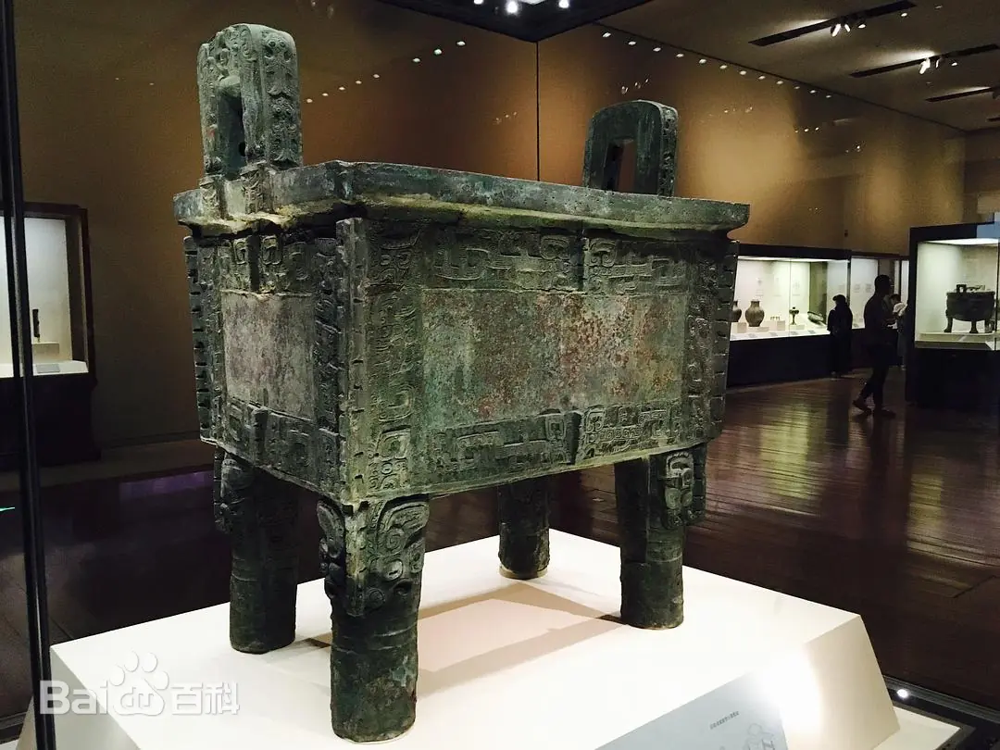
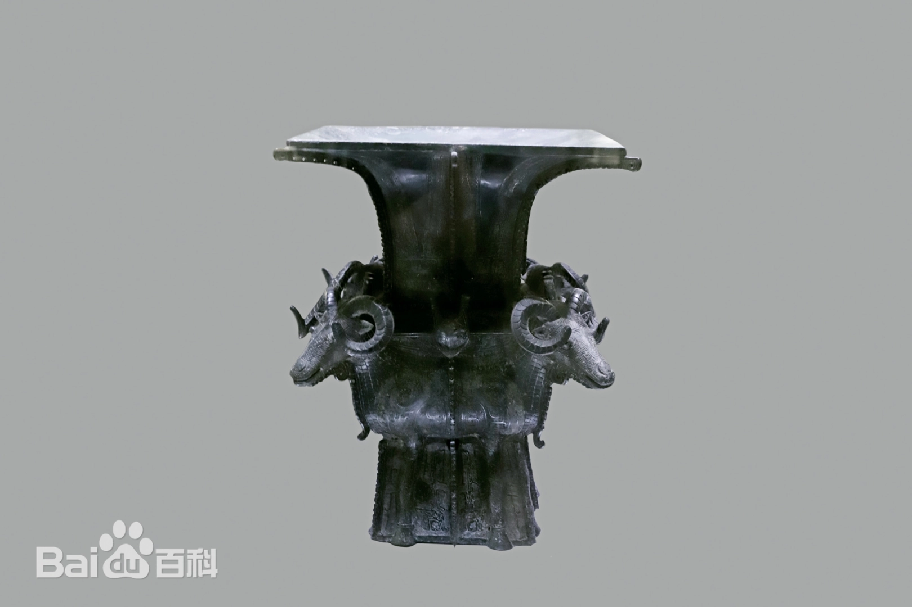
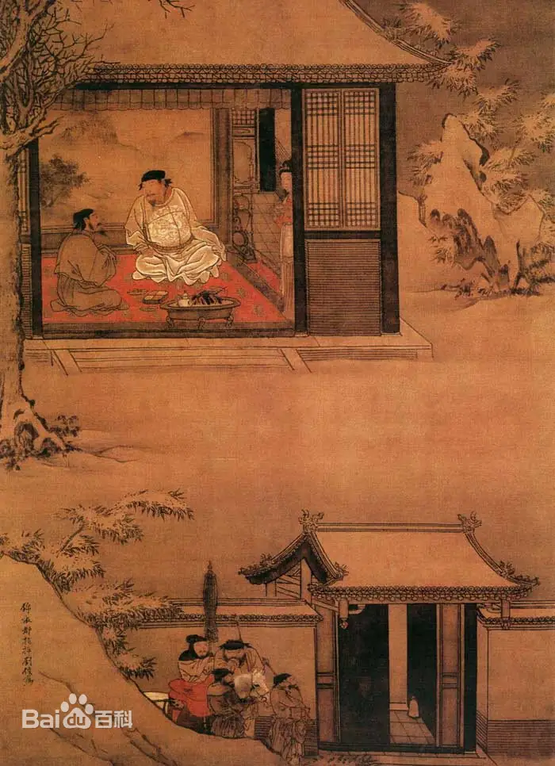
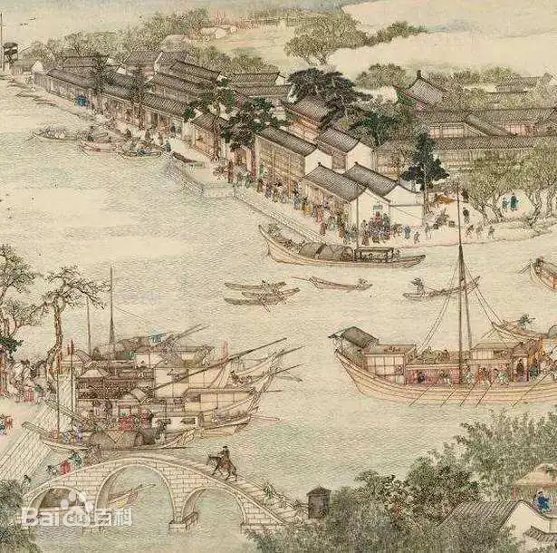

文明长河
五千年中华文脉，每一件国宝都是历史长河中最耀眼的浪花

商 约公元前1300年
后母戊鼎
商朝晚期青铜器，1939年出土于河南安阳殷墟，重832.84千克，是迄今世界上出土最大最重的青铜礼器，现藏中国国家博物馆。
商 约公元前1200年
四羊方尊
商朝晚期青铜器，1938年出土于湖南宁乡，是中国现存商代青铜方尊中最大的一件，被誉为"臻于极致的青铜典范"，现藏中国国家博物馆。


西周 约公元前1000年
何尊
西周早期青铜器，1963年出土于陕西宝鸡，内底铸有铭文"宅兹中国"，是"中国"一词最早的文字记载，现藏宝鸡青铜器博物院。
南宋 约12世纪
《雪夜访普图》
南宋刘俊所绘，描绘宋太祖赵匡胤雪夜访问赵普的故事，展现君臣议政的历史场景，现藏北京故宫博物院。


清 约1759年
《姑苏繁华图》
清朝徐扬所绘，又名《盛世滋生图》，全长1225厘米，描绘乾隆年间苏州繁华景象，是研究清代社会的珍贵图像资料，现藏辽宁省博物馆。